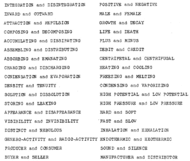
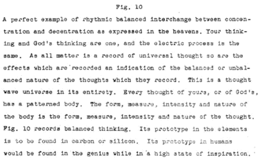
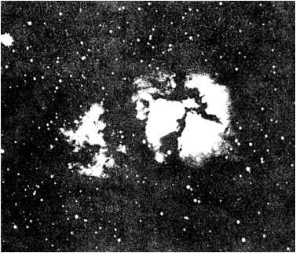
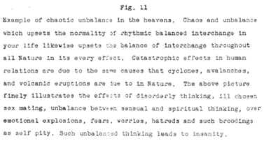
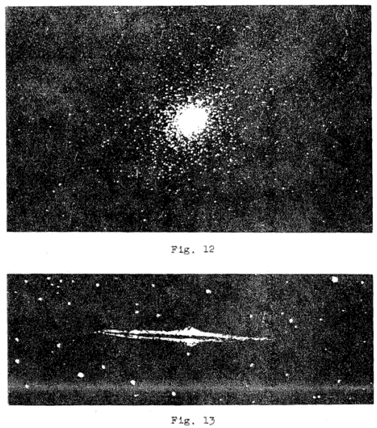
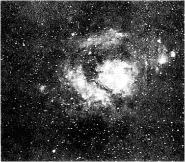

LESSON NUMBER 10 THIS SEXED ELECTRIC UNIVERSE¶
The time has now come when we must utterly transform our primitive world thinking in respect to practically every one of the great elements which constitute the basis of our human relations, our sciences, philosophies and religions.
Most important among these, which we will first consider are LOVE–SEX–LIFE AND DEATH–REINCARNATION–BALANCE–ENERGY–MATTER–POLARITY–GROWTH–ELECTRICITY–MAGNETISM–and many other subjects of vital import to our lives as individuals and as units of the world-group.
I do not mean that we shall modify, or amplify our present concepts regarding these fundamental subjects. I mean that we must utterly discard them. From now on I want you to leap ahead one thousand years in your thinking. You must step out of the Barbaric into the Cosmic Age and draw all others up unto you.
You must stop thinking of these different subjects as though they were different and separate effects. They are all ONE for they are founded upon The Divine Trinity. No effect in Nature varies in cause from any other effect. The same principle underlies all effects of motion and that principle is sex interchange between the two extended zeros of polarity in The Divine Trinity. These CONTROL the interchange. The zero of Cause, which centers the two, BALANCES the Interchange.
All effects are the dual effect of interchange between pairs of opposed conditions. The effect of a stone falling to the ground, the swinging of a pendulum, the bankruptcy of a merchant, or his great success, are all based upon the principle of interchange between polarized opposites, and their “good” or “bad” effects. The greater one’s knowledge the greater the power to balance and control all effects. Out of greater knowledge a new world of men will come to transform past ages of gross ignorance.
For this reason we must transform world thinking of CAUSE and EFFECT in quite different terms than in the past.
Mankind has thought of sex, for example, in terms of a relation between the opposite sexes in organic living animal life, never for a moment including sex relations in the mineral kingdom, nor in hot suns or the ice caps of the poles of planets.
With such thinking we have used such terms as cohabitation and the sex relation as though the sex relation is entirely separate and apart from other relations, and as though its reproductive effect is limited to living things which die, or growing things which decay.
From now on you must know the inclusiveness of sex as being expressed continuously and perpetually forever in all things. Instead of thinking in terms of cohabitation, and the sex relation, you must automatically think of it as the interchange between pairs of oppositely unbalanced conditions for the purpose of balancing those conditions. AND THAT MEANS EVERY EFFECT OF MOTION IN THE ENTIRE UNIVERSE. “Good” effects are those in which the interchange is balanced–and all “bad” effects are those in which balance is not complete.
All motion is sex motion for all motion has but one purpose, which is to divide THE BALANCE OF THE INDIVISIBLE UNIVERSAL EQUILIBRIUM into pairs of oppositely unbalanced conditions which perpetually seek BALANCE in each opposite mate for the purpose of repeating the divided sex condition. TO THE EXTENT THAT ANY INTERCHANGE BALANCES THE UNBALANCED CONDITION IN ANY PAIR OF OPPOSITES IT WILL REPEAT ITSELF IN THAT MEASURE.
I know it is a difficult transition to make, and more difficult to accept all at once without reservations. I can hear you, in my imagination, asking: “You do not mean minerals having sex, do you?” or “You do not possibly mean that the motions of work in a factory, or the smelting of metals is sex, do you?” and I emphatically answer YES to these questions and all other questions concerning the interchange of motion of any kind.
Water vapor rising into the heavens expresses the sex desire for balance in the negative direction of motherhood, and its recondensation into raindrops expresses the sex desire for balance in the positive direction of fatherhood which it finds only to lose it again perpetually for the purpose of repeating sex interchange between opposite mates.
I could continue writing hundreds of pages of other examples of interchanging motion between every pair of opposite conditions in Nature, or in human activities, and the answer would always be the same, whether such mates be buyer and seller, producer and consumer, alkalis and acids, heat and cold, anode and cathode, matter and space, compression and expansion; the singing of a bird or the explosion of dynamite.
From now on cease thinking of matter and motion in any such terms as those implied when we speak of attraction or repulsion in relation to the seeming effect of the moon on the tides. Likewise cease thinking of matter, or any of its attributes, in terms of energy.
Matter has no attraction for other matter, nor does matter repel matter–nor is there energy in either motion or matter.
BASIC SEX THINKING¶
Let us again return to the basis of The Divine Trinity. God’s Mind KNOWS.
This fact of Nature you must fully comprehend. I will briefly state the basis of that cosmic fact now and amplify it later.
The only reason that matter moves is because it is out of balance with its equilibrium and must find its lost balance in the universal equilibrium where it can find rest. When thus moving it expresses the energy of its Source but the energy thus manifested is in the Source–and not in motion.
If matter is in balance it cannot move without losing its balance. That is as true of a planet which floats in its orbit as it is of you who must lose and find your balance in order to walk, or of a stone falling to earth.
The continuous moving of a planet is due to its perpetual seeking for balance which it forever loses as it forever finds it.
This applies to all things in Nature, for motion is impossible except through interchange between the two unbalanced sex conditions.
Likewise motion cannot be repeated in any effect in Nature except through finding balance–such as losing your balance to move, and finding it to again move–or finding balance in sex interchange to lose it again to repeat sex interchange in continuous cycles.
I again repeat this incontrovertible fact that in every phenomena of motion in Nature, from the birth of a violet to the unfolding of a stellar nebula, this principle is absolute.
Matter in balance is sexless until again out of balance, just as humans are sexless when balanced by sex interchange, until again being sex conditioned by sex division.
All unbalanced sex divided matter is either moving in the positive direction of fatherhood or in the negative direction of motherhood to find balance in the sexless equilibrium of father-motherhood.
This is important for you to remember until I amplify it later, for there are only two directions in Nature, and those two directions are the inward and outward directions of sex interchange between unbalanced pairs of oppositely conditioned mates which are seeking sex balance through each other.
We will have much to say regarding this fact of Nature later on as we proceed, for all matter in the entire universe is divided into sex conditioned mates which are forever attempting to void their opposition by sex interchange through each other.
BASIC SEX THINKING¶
Let us again return to THE DIVINE TRINITY OF CREATOR AND CREATION and retrace our steps, for in it is the basis of sex. We will repeat:
God’s Mind KNOWS. Mind-knowing is the undivided ONE, the balanced ONE.
God’s Mind THINKS. Mind-thinking is the divided TWO, the unbalanced TWO.
Mind THINKS because of desire of Mind to manifest what it KNOWS. The Light of Mind-knowing is magnetic. It is the Light of the spiritual Consciousness. The magnetic Light is the Light of your Soul, which is the Universal Soul of the One Supreme Being.
Now we shall give other words to the three of THE DIVINE TRINITY. These other words are these: TWO, centered by the ONE, which means the sex conditioned TWO centered by the sexless ONE.
These words for THE DIVINE TRINITY are given so that you will better understand God’s words in The Divine Iliad which I will again repeat: “For behold, I am within all things centering them, and I am without all things controlling them.”
This simple fact MUST be thoroughly understood in order that the great simplicity of God’s creating universe can be known to you. As an example of the above words for THE DIVINE TRINITY think of the center of gravity of this earth–then think of its two oppositely directed extensions to the North and South magnetic poles on the outer surface of the planet.
Now if you will think of these three zeros of rest in the words of The Divine Iliad just quoted you will better understand that there is not one thing in Nature, not even one microscopic cell in your body–nor the slightest action of your body, nor of your thinking–nor of a grain of dust on a butterfly’s wing, that is not thus centered and its interchange balanced by God’s Light of Universal Consciousness and controlled by God’s two watchful eyes from without.
GOD’S PAIRS OF OPPOSITES¶
Now we come to an amazing statement which I have tried to prepare you for, and which must still be gradually unfolded and clarified in order for you to begin to grasp that great simplicity which lies behind the all-knowing which you would timelessly receive if you were fully illumined with Cosmic Consciousness. The greater your ability to see it as I tell it to you, the wider the doors to the Light will open unto you.
Your senses have built this tremendous complexity which does not exist in your KNOWING. The infinite complexity of the cosmos is composed of infinite reflected and repeated extensions just as the infinite complexity of the kaleidoscope is similarly composed.
For this reason I ask of each of you to burn the following statement into your Consciousness by many readings and much meditation, followed by THINKING your new KNOWING into many improvised examples until the fundamentals of Creation will be as simple to you as they have been made known to me by the Light which you and I are.
In this sex divided electric wave universe of seemingly countless complex pairs of opposite effects, forms, conditions and directions of motion, there are but two effects from which their infinite complexities extend.
Just pause and think of this. Think of the thousands of forms of animal and vegetable life, effects of sounds;–the ocean crashing on the sands, the songs of birds, the wind blowing cold against your cheek–the roar of avalanches–the ices of the poles–and the inconceivable heat of sun centers–all of the countless effects of Creation, which arise from their ONE CAUSE in their CREATOR, spring from just one pair of opposite effects which are Mental CONCENTRATION and DECENTRATION.
Mind KNOWING and Mind THINKING are all that is–and all matter is but an electric record of Mind thinking.
KNOWING is undivided. THINKING is divided into TWO–hence its simplicity.
B U T–those TWO are multiplied indefinitely—hence their complexity.
Many different words are used to express the same thing which confuse you. However, you need not be confused if you will but remember that the solution of every complex effect, whether chemical, electrical, astronomical, social, or that business problem which you are just now facing, lies somewhere within the balance or unbalance between the concentrative or decentrative thinking which motivates the heartbeat of the universe.
CONCENTRATION is an effect of gathering a very large volume of rarified matter like gases, or light rays which you cannot see into a small volume which compresses it into solid matter or focal point of light which you can see.
Visibility is an effect of CONTRACTION–and contraction heats–and that is the way that God’s concentrative thinking gathers hot incandescent suns together in space to create His visible universe of objective forms.
God’s decentrative thinking surrounds those suns with cold, dark, evacuated and invisible space.
So from concentration and decentration we now have other pairs of opposite effects which mean exactly the same thing. These are CONTRACTION AND EXPANSION–and–MATTER and SPACE–and–HOT and COLD–and–SOLIDITY and VACUITY–and–LIGHT and DARK.
All of these pairs of opposites mean the same thing, concentration and decentration, and each are expressions of divided FATHER-MOTHRHOOD into FATHER and MOTHERHOOD.
Likewise all have the same purpose–and that purpose is to FULFILL THE DESIRE OF MIND to give sex-conditioned body forms to Mind imaginings.
CONCENTRATION builds formed bodies by contraction, while DECENTRATION dissolves them. Let us repeat this sentence in other words of the same meaning.
GENERATION builds formed bodies by contraction, while DEGENERATION dissolves them by expansion. Let us again repeat it in other words.
GRAVITATION builds formed bodies while RADIATION dissolves them. Words of the same meaning are:

Archival Plate (image014.gif)¶
The generic term which we will henceforth use for the pairs of opposite expressions of any idea is POLARITY, or NORTH and SOUTH.
The two terms used to distinguish one extreme of polarity from the other extreme are POSITIVE and NEGATIVE.
CONCENTRATION is positive. DECENTRATION is negative. The MALE is positive. The FEMALE is negative.
As you master this idea you will be better equipped to comprehend HOW and WHY matter emerges from space to construct forms and HOW and WHY space swallows matter to dissolve its forms.
Likewise, you will comprehend how to give form to your conceptions and imaginings, making them stepping stones for greater and greater achievement.
This knowledge is your power when your SOUL knows it–so do not let these words be just photographically impressed upon your brain. Meditate upon them in communion with your Mind–which is God’s Mind–until you KNOW them instead of just remembering them.

Archival Plate (image015.gif)¶

Archival Plate (image016.gif)¶

Archival Plate (image017.gif)¶

Archival Plate (image018.gif)¶

Archival Plate (image019.gif)¶
Figures 12 & 13 are examples of orderly balanced concentration and decentration upon a macrocosmic scale. The building of balanced bodies in the heavens is the same in principle as the building of your body. Orderly balanced thinking builds normally balanced bodies. Every condition of your life reflects your thinking. The secret of glorious living lies in rhythmic balanced interchange.

Archival Plate (image020.gif)¶
Fig. 14
Excellent example of vagueness and indecision recorded in Nature. Everywhere in Nature the vagueness and weakness of nebulous, negative thinking and unbalanced interchange between unbalanced mates is recorded in every cell of matter which composes every body or any mass. This record of nebulous interchange between opposite conditions of concentration and decentration is as evident in the unstable chemical elements and compounds, as it is in the masses of weak, unstable humans who follow leaders and have no ability to make decisions of their own.